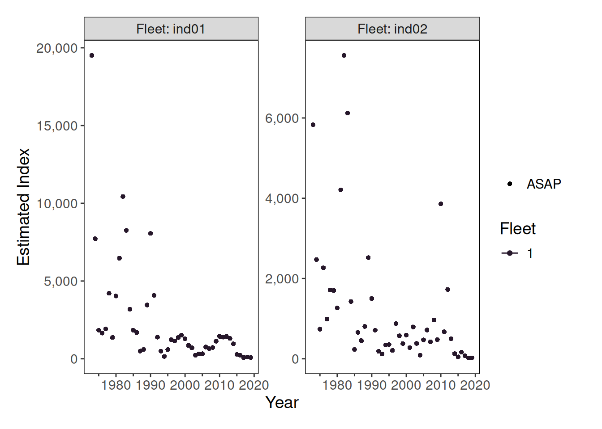

Southern New England-Mid Atlantic Yellowtail Flounder
The setup
R version: R version 4.6.2 (2026-10-29)
TMB version: 1.9.25
FIMS commit: 2fe4a67
Stock name: Southern New England-Mid Atlantic Yellowtail Flounder
Region: NEFSC
Analyst: Chris Legault
Simplifications to the original assessment
The model presented in this case study was changed substantially from the operational assessment model that was presented to management in 2022 for Southern New England-Mid Atlantic Yellowtail Flounder (NEFSC, 2022) and should not be considered reflective of the Southern New England-Mid Atlantic Yellowtail Flounder stock. These results are intended to be a demonstration for comparing the results of a FIMS model to the results of an Age-Structured Assessment Program (ASAP) model.
To get the operational model to more closely match what is capable in a FIMS model, the following changes were made:
Changed the timing of the surveys from from April to January 1.
Changed the timing of when spawning biomass is calculated from April to January 1.
Used the catch weight-at-age matrix for weight-at-age data and ignored the matrices for spawning biomass and the timing of the surveys.
Changed the selectivity for both the fishing fleet and survey fleets to logistic.
Changed from an unexploited scaler on spawning biomass to recruitment.
Spawning biomass calculations in FIMS assume 0.5 multiplier, which differs from ASAP Issue #521.
Turned on the use likelihood constants in ASAP to enable the comparison of likelihood components, an option that should not be used because recruitment deviations are estimated.
One-step-ahead residuals do not exist yet in FIMS.
Reference points are not automatically calculated and could not be compared.
The following additional changes were made as well though they are not necessary:
End year 2021 to 2019 due to missing 2020 survey.
Removed 3 index of abundance fleets because they had years with missing data.
Removed the discard fishing fleet.
Filled a survey missing year for one index using fitted estimate from ASAP.
Used the mean weight at age across all years instead of allowing weight-at-age data to vary with time.
Changed the aggregate index unit from numbers to weight.
Removed the time blocks on selectivity for the fishing fleet.
Used the time-series mean of the coefficient of variation for each index as the measurement of uncertainty.
Used the time-series mean of effective sample size for age-composition data for each fleet.
Projections were removed from the comparison.
Missing years of survey data were filled in using predictions from the simplified ASAP model. The ASAP model was first ran with the missing data treated as missing. Then the missing data was filled in with the expected value of the survey, both in aggregate and for catch at age in place of the missing data.
Setting up the data
Code
# read the ASAP rdat filesrdat <-dget(file.path(data_directory, "NEFSC_YT_SIMPLIFIED.RDAT")) # to be used in FIMS, lots of modifications from originalorig <-dget(file.path(data_directory, "NEFSC_YT_ORIGINAL.RDAT")) # where started before modifications for use in FIMS# set up FIMS data objectsdata_4_model <- FIMS::FIMSFrame(get_asap_data(rdat))# define the dimensionsyears <-seq(get_start_year(data_4_model), get_end_year(data_4_model))
Run FIMS model
Code
# clear memoryFIMS::clear()parameters <-setup_default_parameters(data = data_4_model) |># ASAP assumes Fmult devs = 0 dplyr::rows_update( tibble::tibble(fleet =c("survey1", "survey2"),label ="log_q",value =log(rdat$initial.guesses$q.year1.init) ),by =c("fleet", "label") ) |> dplyr::rows_update( tibble::tibble(# ASAP can enter either R0 or SB0, use R0 in input filelabel =c("log_rzero", "logit_steep"),value =c(log(rdat$initial.guesses$SR.inits$SR.scaler.init), FIMS::logit(0.2, 1.0, rdat$initial.guesses$SR.inits$SR_steepness.init) ),estimation_type =c("fixed_effects", "constant") ),by =c("label") ) |># Maturity# NOTE, to match FIMS for a protogynous stock,# maturity values were obtained by fitting a logistic fcn to the age vector,# mat.female*prop.female + mat.male*prop.male# assuming an all female population dplyr::rows_update( tibble::tibble(module_name ="Maturity",label =c("inflection_point", "slope"),value =c(1.8, 4) ),by =c("module_name", "label") ) |> dplyr::rows_update( tibble::tibble(module_name ="Population",label ="log_init_naa",age =get_ages(data_4_model),value =log(rdat$N.age[1, ]),estimation_type ="fixed_effects" ),by =c("module_name", "label", "age") ) |> dplyr::rows_update( tibble::tibble(module_name ="Population",label =rep("log_M", get_n_years(data_4_model) *get_n_ages(data_4_model)),timing =rep(years, each =get_n_ages(data_4_model)),age =rep(get_ages(data_4_model), get_n_years(data_4_model)),# M is vector of age1 M X nyrs then age2 M X nyrsvalue =log(as.numeric(t(rdat$M.age))) ),by =c("module_name", "label", "age", "timing"),# TODO: fix thisunmatched ="ignore" ) |># Update log_sd for log_devs in the Recruitment module dplyr::rows_update( tibble::tibble(module_name ="Recruitment",label ="log_sd",# ASAP takes one value per year but that value is often just repeatedvalue =mean(rdat$control.parms$recruit.cv) ),by =c("module_name", "label") )
Empirical weight-at-age rows found. Growth defaults to "EWAA".
Code
# Run the model with optimizationfit <- parameters |>initialize_fims(data = data_4_model) |>fit_fims(optimize =TRUE)
✔ Starting optimization ...
ℹ Restarting optimizer 3 times to improve gradient.
ℹ Maximum gradient went from 0.05108 to 0.00045 after 3 steps.
✔ Finished optimization
✔ Finished sdreport
Found more than one class "tbl_df" in cache; using the first, from namespace 'FIMS'
Also defined by 'tibble'
Found more than one class "tbl_df" in cache; using the first, from namespace 'FIMS'
Also defined by 'tibble'
Found more than one class "tbl_df" in cache; using the first, from namespace 'FIMS'
Also defined by 'tibble'
Found more than one class "tbl_df" in cache; using the first, from namespace 'FIMS'
Also defined by 'tibble'
Found more than one class "tbl_df" in cache; using the first, from namespace 'FIMS'
Also defined by 'tibble'
✔ Convergence: "OK"
ℹ FIMS model version: 0.11.0.9000
ℹ Total run time was 15.59886 seconds
ℹ Number of parameters: fixed_effects=63, random_effects=46, and total=109
ℹ Maximum gradient= 0.00045
ℹ Negative log likelihood (NLL):
• Marginal NLL= 2521.61332
• Total NLL= 2463.07992
ℹ Terminal SB= 844.28047
Code
output <-get_estimates(fit)# eventually change to allow multiple fishing fleets similar to multiple indices - only using 1 fishing fleet for now# NOTE: FIMS assumes SB calculated at the start of the year, so need to adjust ASAP to do so as well for now, need to make timing of SSB calculation part of FIMS later# NOTE: for now tricking FIMS into thinking age 0 is age 1, so need to adjust A50 for maturity because FIMS calculations use ages 0-5+ instead of 1-6sdr <-get_sdreport(fit)sdr_fixed <-summary(sdr, "fixed")report <-get_report(fit)
Plotting
Code
output_asap <-convert_output_asap(rdat)output_original <-convert_output_asap(orig)output_fims <- stockplotr::convert_output(output, model ="fims")
→ `files` is a single model. Converting to list object.
ℹ FIMS reports years as indices (1 = first model year); use `start_year` to convert them to years.
✔ Conversion finished!
Code
output_combined <- dplyr::bind_rows(.id ="model","ASAP"= output_asap,"FIMS"= output_fims,"ASAP_original"= output_original)stockplotr::plot_spawning_biomass(output_combined, group ="model")
# TODO: ask Chris which surveys map to old survey namesstockplotr::plot_index(output_combined)
! Multiple models found in data.
ℹ Environment not interactive. Selecting ASAP.
! No unit label found in the data. Please provide a unit label using the 'unit_label' argument.
Scale for x is already present.
Adding another scale for x, which will replace the existing scale.

Code
stockplotr::plot_landings(output_combined, group ="model")
! Multiple models found in data.
ℹ Environment not interactive. Selecting ASAP.
ℹ No predicted landings found for the years with observed landings; plotting the observed landings only.
! Multiple models found in data.
ℹ Environment not interactive. Selecting ASAP.
! fishing_mortality_msy not found for data
! fishing_mortality_msy not found for data
! fishing_mortality_msy not found for data
# TODO: turn these plots on when available in mainstockplotr::plot_abundance_at_age( output_fims,# TODO: fix unit to be internal# Add abundance at age to ASAP outputunit ="mt")stockplotr::plot_composition_residuals( output_fims)
Comparison table
The likelihood components from FIMS and ASAP for the same data are shown in the table below. Note that the ASAP file had to turn on the use likelihood constants option to enable this comparison (this option should not be used when recruitment deviations are estimated).